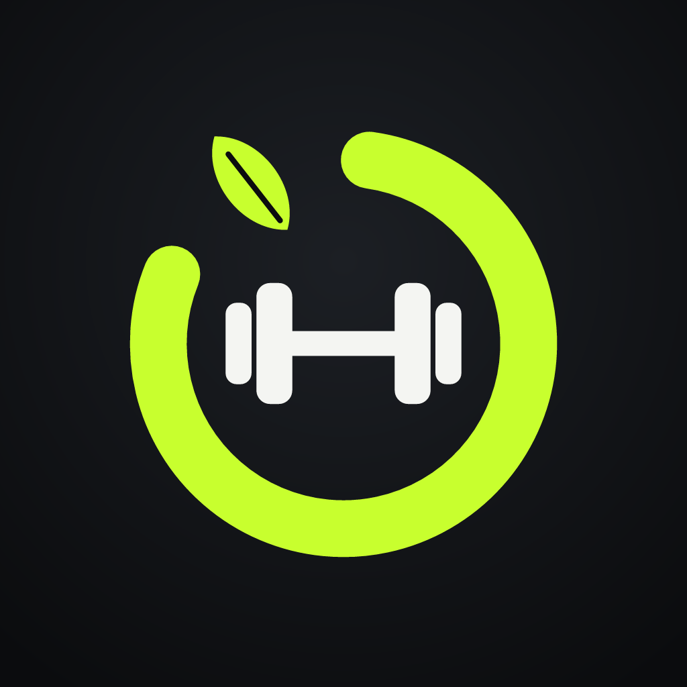

RINGOYürürlük tarihi: 3 Kasım 2026
Ringo hesap istemez ve senden hiçbir kişisel veri toplamaz. Girdiğin her şey yalnızca telefonunda saklanır ve bize ya da başka birine gönderilmez. Reklam göstermeyiz, analiz veya takip aracı kullanmayız, cihazının reklam kimliğine erişmeyiz.
Ringo'yu geliştiren ve yayınlayan bireysel geliştirici:
Uygulamanın çalışması için şu bilgiler yalnızca cihazında saklanır:
Bu bilgilere bizim erişimimiz yoktur. Sunucumuz yoktur.
Apple Sağlık bağlantısı isteğe bağlıdır ve yalnızca sen Ayarlar'dan açarsan çalışır. İzin verirsen:
Sağlık verileri Ringo tarafından hiçbir sunucuya gönderilmez; reklam, pazarlama veya başka bir amaçla kullanılmaz ve kimseyle paylaşılmaz. İzinleri istediğin zaman iPhone Ayarlar > Sağlık > Veri Erişimi > Ringo bölümünden kapatabilirsin.
Öğün, su ve antrenman hatırlatmaları telefonunda yerel olarak planlanır. Bildirim için herhangi bir sunucu kullanılmaz.
"Yedeği dışa aktar" seçeneğini kullandığında verilerin bir metin olarak telefonunun paylaşım ekranına verilir; nereye kaydedeceğine (Notlar, e-posta, mesaj vb.) sen karar verirsin. Bu yedeği biz görmeyiz.
Verilerini kimseyle paylaşmayız ve satmayız, çünkü elimizde verin yoktur. Uygulamayı App Store'dan indirdiğinde Apple kendi politikasına göre veri işler; bu bizim kontrolümüzde değildir. Bu web sitesi GitHub Pages üzerinde barındırılır; siteyi ziyaret ettiğinde IP adresin GitHub'ın teknik kayıtlarında yer alabilir.
Veriler sen silene kadar telefonunda kalır. Ayarlar > Tüm verilerimi sil ile ya da uygulamayı silerek tüm verileri kaldırabilirsin. Apple Sağlık'a yazılan kilo ölçümleri Sağlık uygulamasında kalır; oradan ayrıca silebilirsin.
Ringo 13 yaşından küçükler için tasarlanmamıştır.
Veriler yalnızca senin cihazında olduğu için erişme, düzeltme ve silme hakkını uygulama içinden doğrudan kullanabilirsin. Soruların için bize yazabilir, ayrıca bulunduğun ülkedeki veri koruma kurumuna (Malta'da IDPC) şikâyette bulunabilirsin.
Ringo genel bilgi verir; doktor veya diyetisyen tavsiyesi yerine geçmez. Kalori ve besin değerleri yaklaşıktır.
Bu politika değişirse güncel hâli bu sayfada, yeni yürürlük tarihiyle yayınlanır.
Effective date: 3 November 2026
Ringo has no accounts and does not collect any personal data from you. Everything you enter is stored only on your phone and is never sent to us or anyone else. We show no ads, use no analytics or tracking tools, and do not access your device's advertising identifier.
The individual developer who builds and publishes Ringo:
To work, the app stores the following only on your device:
We have no access to this data. We do not run any servers.
The Apple Health connection is optional and only works if you turn it on in Settings. If you grant permission:
Ringo never sends health data to any server. It is not used for advertising, marketing or any other purpose and is not shared with anyone. You can revoke access at any time in iPhone Settings > Health > Data Access > Ringo.
Meal, water and workout reminders are scheduled locally on your phone. No server is used for notifications.
When you use "Export backup", your data is handed to your phone's share sheet as text and you decide where to save it (Notes, email, messages, etc.). We never see this backup.
We do not share or sell your data, because we do not have it. When you download the app from the App Store, Apple processes data under its own policy, which is outside our control. This website is hosted on GitHub Pages; when you visit it, your IP address may appear in GitHub's technical logs.
Data stays on your phone until you delete it. Use Settings > Delete all my data, or delete the app, to remove everything. Weight entries written to Apple Health remain in the Health app and can be deleted there separately.
Ringo is not designed for children under 13.
Because your data lives only on your device, you can exercise your rights of access, correction and deletion directly in the app. You can contact us with any questions and you may also lodge a complaint with your local data protection authority (in Malta, the IDPC).
Ringo provides general information and does not replace advice from a doctor or dietitian. Calorie and nutrient values are approximate.
If this policy changes, the updated version will be published on this page with a new effective date.